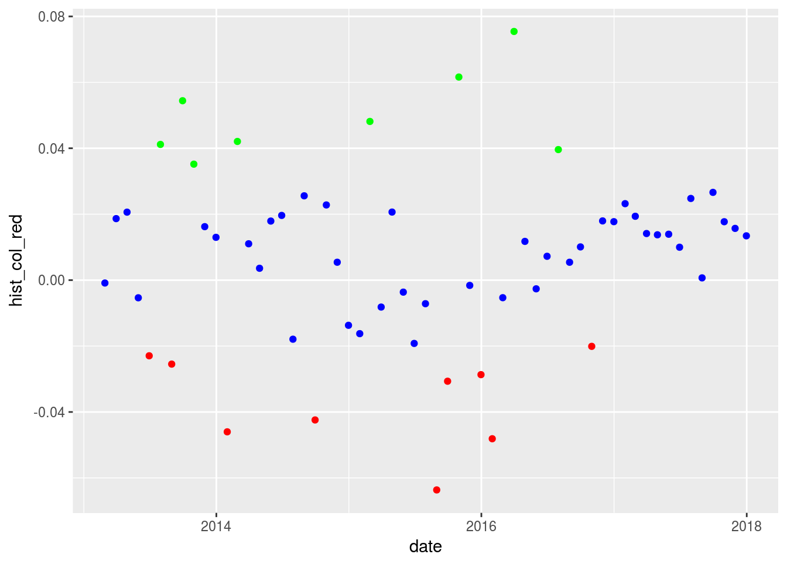

Chapter 2 Portfolio Standard Deviation
Let’s start with the textbook equation for the standard deviation of a multi-asset portfolio.
Here is the Latex code for the equation.
$$Standard~Deviation=\sqrt{\sum_{t=1}^n (x_i-\overline{x})^2/n}$$And here is the output
\[Standard~Deviation=\sqrt{\sum_{t=1}^n (x_i-\overline{x})^2/n}\] where x is each monthly portfolio return and x-bar is the mean monthly portfolio return. For a multi-asset portfolio, the equation is not simply the weighted variances of each asset. Instead, it’s the weight squared of each asset multiplied by that asset’s variance, plus the covariance of each asset times the weights of those assets.
Here is the Latex code for the equation
$$Standard~Deviation=$$
$$w_{asset1}^{2} * var_{asset1} ~+~ w_{asset2}^{2} * var_{asset2} ~+~$$
$$w_{asset3}^{2} * var_{asset3} ~+~ w_{asset4}^{2} * var_{asset4} ~+~$$
$$w_{asset5}^{2} * var_{asset5} ~+~ w_{asset1}*w_{asset_2}*cov_{asset 1, ~asset 2} ~+~$$
$$w_{asset1}*w_{asset_3}*cov_{asset 1, ~asset 3} ~+~$$
$$w_{asset1}*w_{asset_4}*cov_{asset 1, ~asset 4} ~+~$$
$$w_{asset1}*w_{asset_5}*cov_{asset 1, ~asset 5} ~+~$$
$$w_{asset2}*w_{asset_3}*cov_{asset 2, ~asset 3} ~+~$$
$$w_{asset2}*w_{asset_4}*cov_{asset 2, ~asset 4} ~+~$$
$$w_{asset2}*w_{asset_5}*cov_{asset 2, ~asset 5} ~+~$$
$$w_{asset3}*w_{asset_4}*cov_{asset 3, ~asset 4} ~+~$$
$$w_{asset3}*w_{asset_5}*cov_{asset 3, ~asset 5} ~+~$$
$$w_{asset4}*w_{asset_5}*cov_{asset 4, ~asset 5}$$Here is that equation for a 5-asset portfolio.
\[Standard~Deviation=\] \[w_{asset1}^{2} * var_{asset1} ~+~ w_{asset2}^{2} * var_{asset2} ~+~\]
\[w_{asset3}^{2} * var_{asset3} ~+~ w_{asset4}^{2} * var_{asset4} ~+~\]
\[w_{asset5}^{2} * var_{asset5} ~+~ w_{asset1}*w_{asset_2}*cov_{asset 1, ~asset 2} ~+~\]
\[w_{asset1}*w_{asset_3}*cov_{asset 1, ~asset 3} ~+~\] \[w_{asset1}*w_{asset_4}*cov_{asset 1, ~asset 4} ~+~\] \[w_{asset1}*w_{asset_5}*cov_{asset 1, ~asset 5} ~+~\] \[w_{asset2}*w_{asset_3}*cov_{asset 2, ~asset 3} ~+~\] \[w_{asset2}*w_{asset_4}*cov_{asset 2, ~asset 4} ~+~\] \[w_{asset2}*w_{asset_5}*cov_{asset 2, ~asset 5} ~+~\] \[w_{asset3}*w_{asset_4}*cov_{asset 3, ~asset 4} ~+~\] \[w_{asset3}*w_{asset_5}*cov_{asset 3, ~asset 5} ~+~\] \[w_{asset4}*w_{asset_5}*cov_{asset 4, ~asset 5}\]
Now, let’s use that equation and calculate portfolio standard deviation by-hand. This is not for the faint of heart.
First, we assign the weights of each asset, based on the w vector we created earlier in the Returns section.
Then, we isolate and assign returns of each asset from asset_returns_xts and plug those weights and returns into the equation for portfolio standard deviation.
w_1 <- w[1]
w_2 <- w[2]
w_3 <- w[3]
w_4 <- w[4]
w_5 <- w[5]
asset1 <- asset_returns_xts[,1]
asset2 <- asset_returns_xts[,2]
asset3 <- asset_returns_xts[,3]
asset4 <- asset_returns_xts[,4]
asset5 <- asset_returns_xts[,5]
sd_by_hand <-
sqrt(
(w_1^2 * var(asset1)) + (w_2^2 * var(asset2)) + (w_3^2 * var(asset3)) +
(w_4^2 * var(asset4)) + (w_5^2 * var(asset5)) +
(2 * w_1 * w_2 * cov(asset1, asset2)) +
(2 * w_1 * w_3 * cov(asset1, asset3)) +
(2 * w_1 * w_4 * cov(asset1, asset4)) +
(2 * w_1 * w_5 * cov(asset1, asset5)) +
(2 * w_2 * w_3 * cov(asset2, asset3)) +
(2 * w_2 * w_4 * cov(asset2, asset4)) +
(2 * w_2 * w_5 * cov(asset2, asset5)) +
(2 * w_3 * w_4 * cov(asset3, asset4)) +
(2 * w_3 * w_5 * cov(asset3, asset5)) +
(2 * w_4 * w_5 * cov(asset4, asset5))
)
sd_by_hand## SPY
## SPY 0.02666It’s nice to display this number as percentage in the investment world.
sd_by_hand_percent <- round(sd_by_hand * 100, 2)Writing that equation out was painful but at least we won’t be forgetting it any time soon. Our result is a monthly portfolio returns standard deviation of 2.67%.
Now let’s turn to the less verbose matrix algebra path and confirm that we get the same result.
First, we will build a covariance matrix of returns using the cov() function.
covariance_matrix <- cov(asset_returns_xts)
covariance_matrix## SPY EFA IJS EEM AGG
## SPY 7.292e-04 6.894e-04 8.171e-04 0.0006968 -3.952e-06
## EFA 6.894e-04 1.066e-03 6.386e-04 0.0010607 4.671e-05
## IJS 8.171e-04 6.386e-04 1.564e-03 0.0006591 -7.379e-05
## EEM 6.968e-04 1.061e-03 6.591e-04 0.0017869 1.052e-04
## AGG -3.952e-06 4.671e-05 -7.379e-05 0.0001052 7.412e-05Have a look at the covariance matrix.
AGG, the US bond ETF, has a negative or very low covariance with the other ETFs and it should make a nice volatility dampener. Interestingly, the covariance between EEM and EFA is quite low as well. Our painstakingly written-out equation above is a good reminder of how low covariances affect total portfolio standard deviation, and how negative covariances can really lower total portfolio standard deviation.
Back to our calculation, let’s take the square root of the transpose of the weights vector times the covariance matrix times the weights vector. To perform matrix multiplcation, we use %*%.
sd_matrix_algebra <- sqrt(t(w) %*% covariance_matrix %*% w)
sd_matrix_algebra_percent <- round(sd_matrix_algebra * 100, 2)
sd_by_hand_percent## SPY
## SPY 2.67sd_matrix_algebra_percent## [,1]
## [1,] 2.67Have a look at our two standard deviation calculations Thankfully, these return the same result so we don’t have to sort through the by-hand equation again.
Standard Deviation in the xts World
In the xts paradigm, we can use the built-in StdDev() function from PerformanceAnalytics to go straight from asset returns to portfolio standard deviation. It takes two arguments, a vector of returns and weights: StdDev(asset_returns_xts, weights = w).
portfolio_sd_xts_builtin <- StdDev(asset_returns_xts, weights = w)
portfolio_sd_xts_builtin_percent <- round(portfolio_sd_xts_builtin * 100, 2)We now have:
sd_by_hand_percent## SPY
## SPY 2.67sd_matrix_algebra_percent## [,1]
## [1,] 2.67portfolio_sd_xts_builtin_percent## [,1]
## [1,] 2.67Standard Devation in the Tidyverse
Now let’s head to the tidyverse and explore the code flow.
We will start with the portfolio returns object portfolio_returns_tq_rebalanced_monthly and use the summarise() function from dplyr and then the base function sd(). We will also perform the calculation with our own equation sqrt(sum((returns - mean(returns))^2)/(nrow(.)-1))).
portfolio_sd_tidy_builtin_percent <-
portfolio_returns_tq_rebalanced_monthly %>%
summarise(sd = sd(returns),
sd_byhand = sqrt(sum((returns - mean(returns))^2)/(nrow(.)-1))) %>%
mutate(sd = round(sd, 4) * 100,
sd_byhand = round(sd_byhand, 4) * 100) %>%
select(sd, sd_byhand)
portfolio_sd_tidy_builtin_percent ## # A tibble: 1 x 2
## sd sd_byhand
## <dbl> <dbl>
## 1 2.67 2.67Standard Deviation in the Tidyquant World
In the code flow below, we’ll invoke the table.Stats() function from PerformanceAnalytics but use tq_performance to apply it to a data frame. The table.Stats() function retuns a table of statistics for the portfolio but since we want only standard deviation, we will use the dplyr verb select() to get just the Stdev column.
portfolio_sd_tidyquant_builtin_percent <-
portfolio_returns_tq_rebalanced_monthly %>%
tq_performance(Ra = returns, Rb = NULL, performance_fun = table.Stats) %>%
select(Stdev) %>%
mutate(Stdev = round(Stdev, 4) * 100)
portfolio_sd_tidyquant_builtin_percent$Stdev## [1] 2.67In general, this demonstrates one of the fantastic ways that tidyquant blends together the xts and tidy paradigms. Here it lets us grab a function from PerformanceAnalytics and use a piped workflow to apply it to a data frame.
Let’s review our calculations thus far.
- by-hand calculation = 2.67%
- matrix algebra calculation = 2.67%
- xts built in function calculation = 2.67%
- tidy built in function calculation = 2.67%
- tidy by hand calculation = 2.67%
- tidyquant built-in function calculation = 2.67
That was quite a lot of work to confirm that 6 calculations are equal to each other but there are a few benefits.
First, while it was tedious, we should feel comfortable with calculating portfolio standard deviations in various ways and starting from different object types. That can be useful when an external team or client dumps data on us and that data has a weird (to us, it’s probably normal to them) format.
More importantly, as our work gets more complicated and we build custom functions, we’ll want to rely on the built-in StdDev() function and the built-in tidy workflow. We’ll also want to manipulate data and slice/dice things for rolling calculations. Our tedious work here, where we used different flows and functions by choice, will facilitate our future work when we need to solve harder coding challenges.
Beyond helping our own work, it can help our colleagues to understand the more complex work if we can point back to this starter code flow on standard deviation.
Visualizing Standard Deviation
Visualizing volatility really involves visualizing reuturns, as we have already done, but trying to put an emphasis on the dispersion of the returns.
Here is the scatter plot of monthly returns that we built in the previous section.
portfolio_returns_tq_rebalanced_monthly %>%
ggplot(aes(x = date, y = returns)) +
geom_point(color = "cornflowerblue") +
scale_x_date(breaks = pretty_breaks(n = 8)) 
Hard to discern much here with respect to volatility, though we can notice that the year 2017 had consistently positive monthly returns. Let’s add some more indicators.
It might be nice to have a different color for any monthly returns that are, say, one standard deviation away from the mean. First, we will create an indicator for the mean return with mean(portfolio_returns_tq_rebalanced_monthly$returns) and one for the standard deviation with sd(portfolio_returns_tq_rebalanced_monthly$returns). We will call the variables mean_plot and sd_plot since we plan to use them in a plot and not for anything else.
sd_plot <- sd(portfolio_returns_tq_rebalanced_monthly$returns)
mean_plot <- mean(portfolio_returns_tq_rebalanced_monthly$returns)We want to shade the scatter points according to some logic, in this case their distance from the standard deviation of returns. Accordingly, we’ll use mutate() to create three columns of returns.
We will nest a call to ifelse() because these new columns are populated according to ifelse logic. If the return observation is one standard deviation below the mean, we want to add that observation to the column we call hist_col_red, else that column should have an NA. We will create three new columns this way.
This nested ifelse() logic is similar to how we calculated portfolio returns by-hand in Section 1. It’s an important tool in finance.
portfolio_returns_tq_rebalanced_monthly %>%
mutate(hist_col_red =
ifelse(returns < (mean_plot - sd_plot),
returns, NA),
hist_col_green =
ifelse(returns > (mean_plot + sd_plot),
returns, NA),
hist_col_blue =
ifelse(returns > (mean_plot - sd_plot) &
returns < (mean_plot + sd_plot),
returns, NA)) %>%
ggplot(aes(x = date)) +
geom_point(aes(y = hist_col_red),
color = "red") +
geom_point(aes(y = hist_col_green),
color = "green") +
geom_point(aes(y = hist_col_blue),
color = "blue")## Warning: Removed 50 rows containing missing values (geom_point).## Warning: Removed 51 rows containing missing values (geom_point).## Warning: Removed 17 rows containing missing values (geom_point).
That visualization gives a little more intuition about the dispersion, we can see about how many red and green dots appear there.
Let’s add a line for the value that is one standard deviation above and below the mean with geom_hline(yintercept = (mean_plot + sd_plot), color = "purple", linetype = "dotted") + geom_hline(yintercept = (mean_plot-sd_plot), color = "purple", linetype = "dotted") +.
The geom_hline() function from ggplot adds a horizontal line to the chart.
portfolio_returns_tq_rebalanced_monthly %>%
mutate(hist_col_red =
ifelse(returns < (mean_plot - sd_plot),
returns, NA),
hist_col_green =
ifelse(returns > (mean_plot + sd_plot),
returns, NA),
hist_col_blue =
ifelse(returns > (mean_plot - sd_plot) &
returns < (mean_plot + sd_plot),
returns, NA)) %>%
ggplot(aes(x = date)) +
geom_point(aes(y = hist_col_red),
color = "red") +
geom_point(aes(y = hist_col_green),
color = "green") +
geom_point(aes(y = hist_col_blue),
color = "blue") +
geom_hline(yintercept = (mean_plot + sd_plot), color = "purple", linetype = "dotted") +
geom_hline(yintercept = (mean_plot-sd_plot), color = "purple", linetype = "dotted") +
scale_x_date(breaks = pretty_breaks(n = 8)) +
ylab("percent monthly returns") +
ggtitle("Monthly Returns Shaded by Distance from Mean")## Warning: Removed 50 rows containing missing values (geom_point).## Warning: Removed 51 rows containing missing values (geom_point).## Warning: Removed 17 rows containing missing values (geom_point).
This is showing us returns over time and whether they fall below or above one standard deviation from the mean. One thing that jumps out is how many red or green circles we see after 2017. 0! That’s zero monthly returns that are least one standard deviation from the mean during calendar year 2017 (Is 2017 a year of very low volatility or did we construct an amazingly stable porftolio? Check out the VIX during 2017!). When we get to rolling volatility, we should see this reflected as a low rolling volatility through 2017. If we something different, we need to investigate.